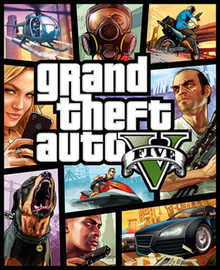
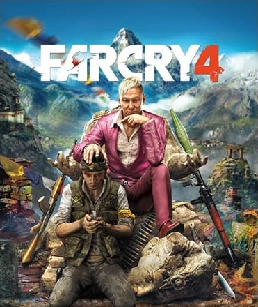
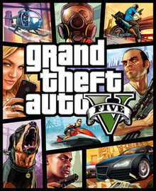
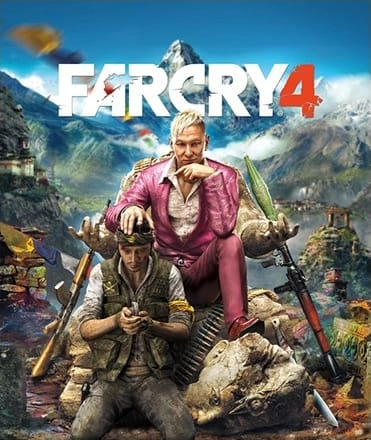

Just Cause 2 is a 2010 action-adventure game developed by Avalanche Studios, published by Eidos Interactive and distributed by Square Enix for Microsoft Windows, PlayStation 3 and Xbox 360. The sequel to 2006's Just Cause, it was powered by Avalanche Studios' Avalanche 2.0 Engine.
Just Cause 2 is a third-person action-adventure game in which players control Rico Rodriguez, field operative of the Agency, in an effort to overthrow the island dictatorship of Panau: an open world for players to explore